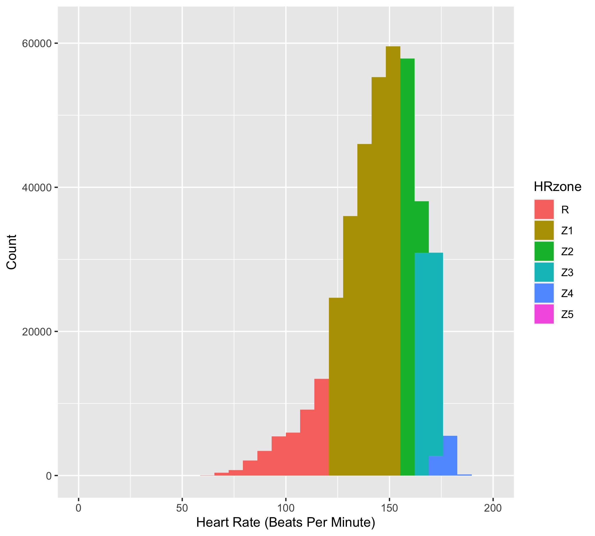
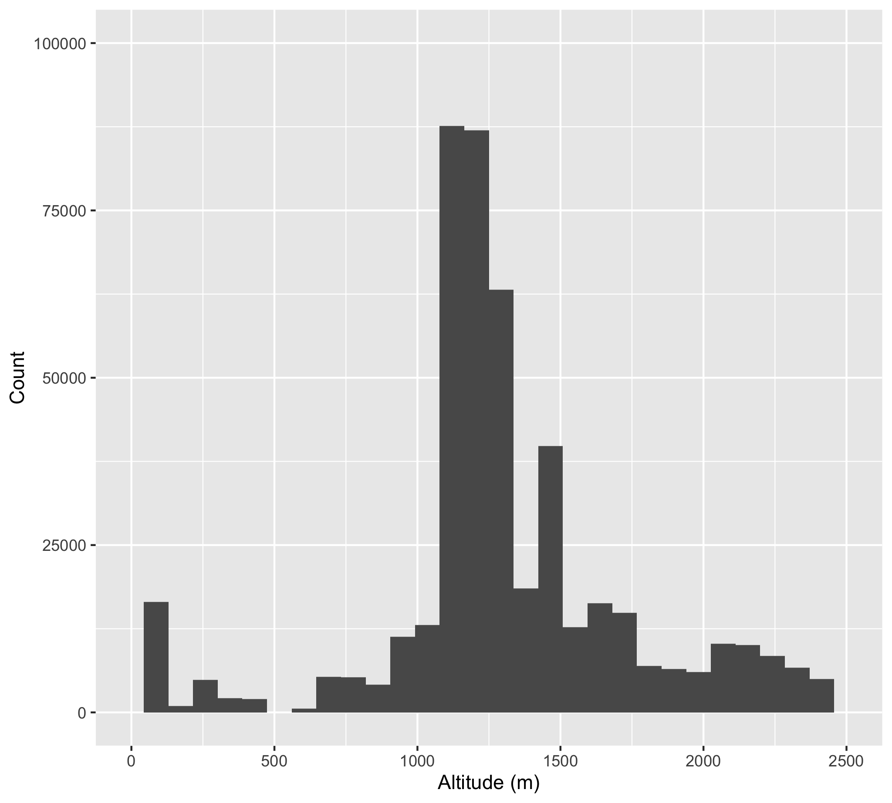
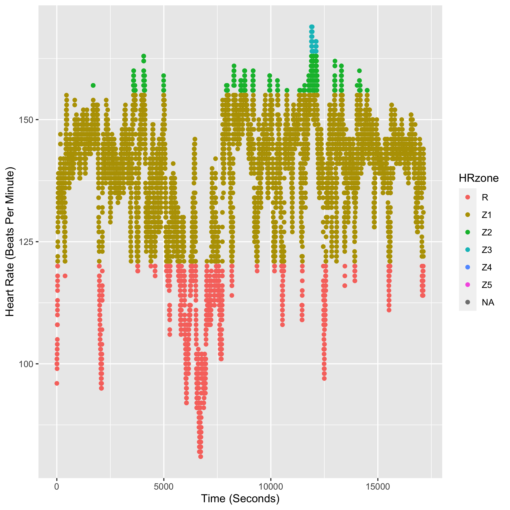
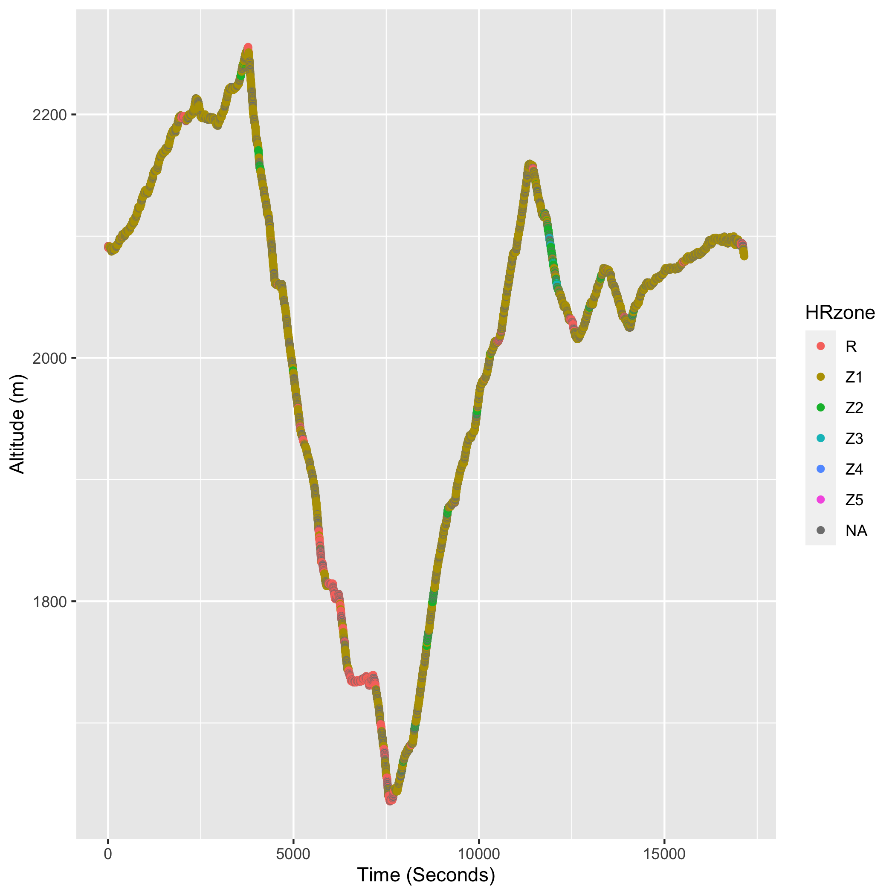
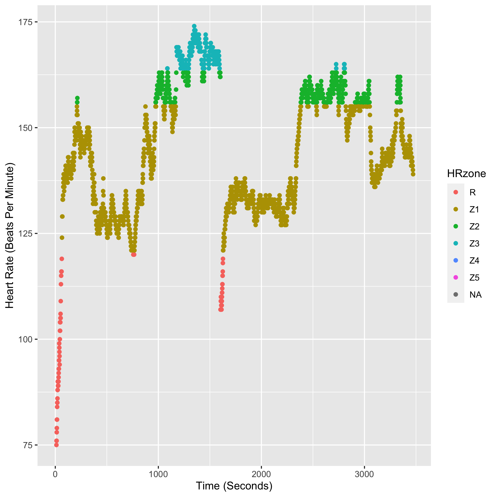
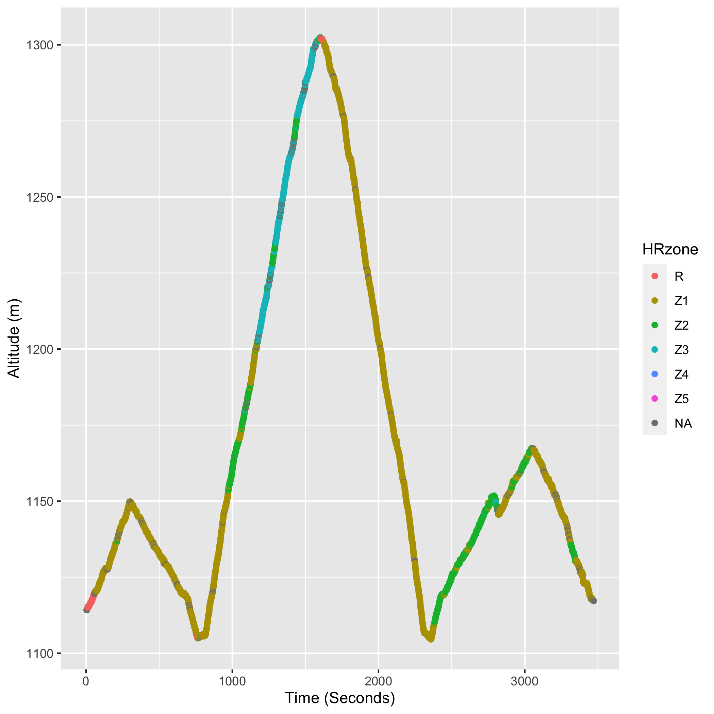
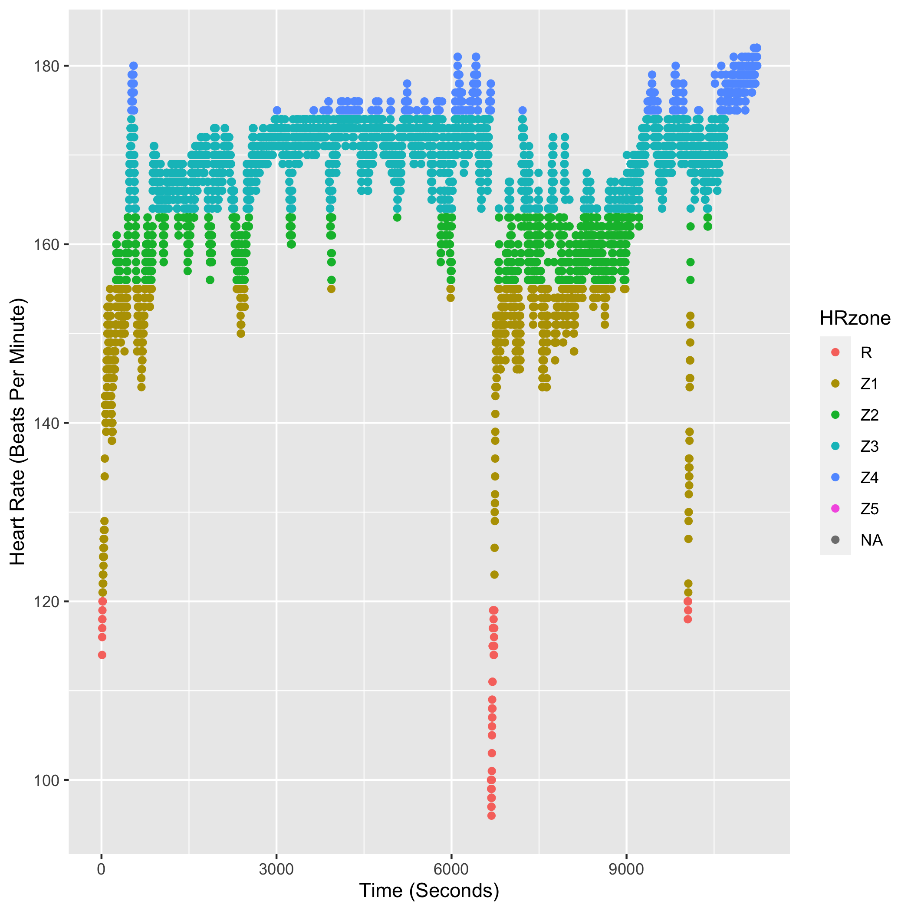
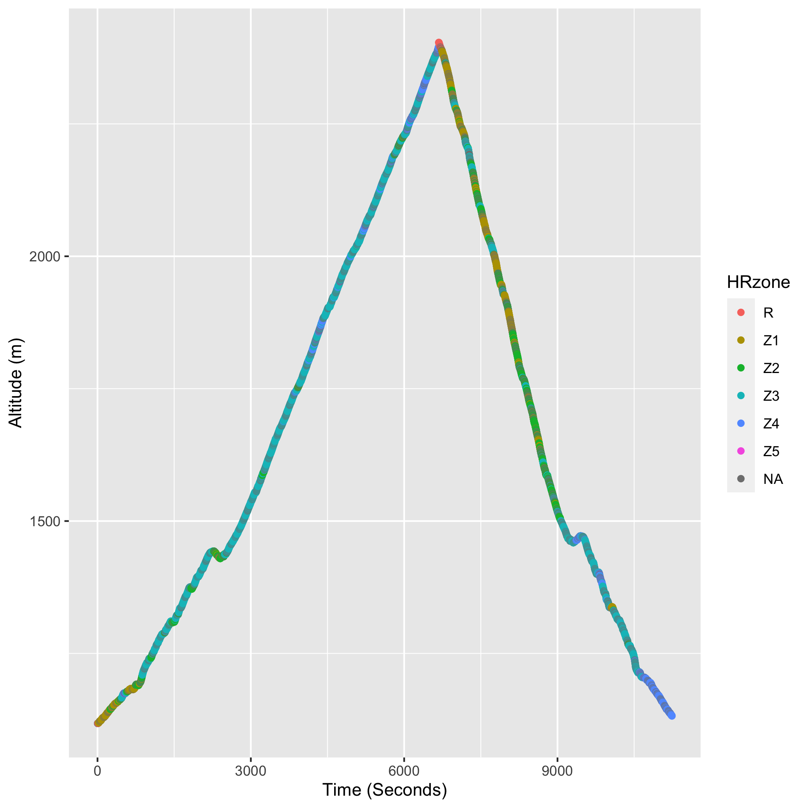

library(tidyverse)
library(lubridate)This analysis is based on a my personal exercise data so it is just a description to make the plots without the actual data existing in the website repository. I will do another post on how to make this dataset from exercise watch data at another time.
Trail Running Data
We will be using the tidyverse and lubridate packages today to explore this dataset. Load the packages.
Load the combined dataset into the R session.
load("MergedFitnessAug2022.RData")The exercise watch I use has the ability to detect heart rate and it works fairly well. Here I create a new column of data that breaks up the heart rate information into different zones roughly corresponding to different physiological states. These zones are defined by physiological testing outlined by The Uphill Athlete.
merged_fitness$HRzone <- cut(merged_fitness$heart_rate,c(0,120,155,163,174, 188, 200))
levels(merged_fitness$HRzone) <- c("R","Z1","Z2","Z3","Z4","Z5")Convert the dataframe into a tibble which is a tidyverse dataframe that has some additional properties to make it easier to examine what is going on.
merged_fitness <- as_tibble(merged_fitness)Subset the large exercise dataframe to just include Trail Running as an activity. Make a quick plot of the heart rate zone data.
TrailRun1 <- subset(merged_fitness, activity == "TrailRunning")
p1 <- ggplot(TrailRun1, aes(x=heart_rate, fill = HRzone)) +
geom_histogram()
p1
I trained very seriously for the Headwaters Trail Ultra starting in early 2022. To take a look at how much time I spent in each heart rate zone and what altitude I trained at, I made a data subset for the training period. You can see that I spent most of my time either in Z1 or Z2/Z3 for training as outlined in the Uphill Athlete training plans. A bulk of my cardiovascular training is spent below 155 beats per minute (Zone 1 Threshold), with some harder workouts in higher heart rate zones (Zone 2/3) and occasionally in Zone 4. A bulk of my recovery workouts were hiking or easy mountain biking so they are not captured in this view of my exercise data. You can also see that a majority of my exercise is at ~1225-1250 m, or around the elevation that I live.
trailRun_2022 <- TrailRun1 %>% filter(timestamp > ymd_hms("2022-01-01 01:28:14") & timestamp < ymd_hms("2022-06-20 01:28:14"))
p2 <- ggplot(trailRun_2022, aes(x=heart_rate, fill = HRzone)) +
geom_histogram() +
scale_x_continuous(name="Heart Rate (Beats Per Minute)", limits=c(0, 200)) +
scale_y_continuous(name="Count", limits=c(0, 62000))
p2
p3 <- ggplot(trailRun_2022, aes(x=altitude)) +
geom_histogram() +
scale_x_continuous(name="Altitude (m)", limits=c(0, 2500)) +
scale_y_continuous(name="Count", limits=c(0, 75000))
p3
To show a few different types of work outs, I make some additional data subsets to make quick plots. Here I subset specific Zone 1, Zone 1/2/3, and a long hard Zone 3 efforts.
trailRun_Z1 <- trailRun_2022 %>%
filter(timestamp > ymd_hms("2022-06-05 01:28:14") & timestamp < ymd_hms("2022-06-06 01:28:14"))
trailRun_Z2 <- trailRun_2022 %>%
filter(timestamp > ymd_hms("2022-03-01 01:28:14") & timestamp < ymd_hms("2022-03-02 01:28:14"))
trailRun_Z3 <- trailRun_2022 %>%
filter(timestamp > ymd_hms("2022-07-08 01:28:14") & timestamp < ymd_hms("2022-07-10 01:28:14"))The Zone 1 workout was a long workout in the Klamath Mountains descending down into the Trinity River Headwaters Basin and then back out to meet up with the PCT. This is also the run where we found some large patches of Cobra Lilies. I am also making a vector of colors so that they will remain consistent across the following plots and match the original colors in the Heart Rate Histogram above.
cols3 <- c("R" = "#F8766D", "Z1" = "#B79F00", "Z2" = "#00BA38", "Z3" = "#00BFC4", "Z4"= "#619CFF", "Z5" = "#F564E3", "NA" = "grey50")
trailRun_Z1$seconds <- as.numeric(rownames(trailRun_Z1))
p4 <- ggplot(trailRun_Z1, aes(x=seconds, y=heart_rate, col=HRzone)) +
geom_point() +
scale_x_continuous(name="Time (Seconds)") +
scale_y_continuous(name="Heart Rate (Beats Per Minute)") +
scale_color_manual(values = cols3)
p4
p5 <- ggplot(trailRun_Z1, aes(x=seconds, y=altitude, col=HRzone)) +
geom_point() +
scale_x_continuous(name="Time (Seconds)") +
scale_y_continuous(name="Altitude (m)") +
scale_color_manual(values = cols3)
p5
The following run is mix of heart rate zones. I have a long warm up followed by a fast climb. I recover on the way down from the climb and then have a fairly steady Zone 2 workout back up the road to the start of the run.
trailRun_Z2$seconds <- as.numeric(rownames(trailRun_Z2))
p6 <- ggplot(trailRun_Z2, aes(x=seconds, y=heart_rate, col=HRzone)) +
geom_point() +
scale_x_continuous(name="Time (Seconds)") +
scale_y_continuous(name="Heart Rate (Beats Per Minute)") +
scale_color_manual(values = cols3)
p6
p7 <- ggplot(trailRun_Z2, aes(x=seconds, y=altitude, col=HRzone)) +
geom_point() +
scale_x_continuous(name="Time (Seconds)") +
scale_y_continuous(name="Altitude (m)") +
scale_color_manual(values = cols3)
p7
This final workout was a hard one! The run was 28.87 km (~18 miles) with 1306 m (4285 feet) of gain/loss. I averaged 166 beats per minute for over 3 hours. I was mostly in heart rate zone 3 with some time in zone 2 and zone 4. On the way down I was feeling very uncomfortable, but kept up the intensity to make sure I set a personal record on this route and would not have to retry it this season. This was my final hard training run before tapering for the Headwaters Trail Ultra. I knew I was ready for the race after this run!
trailRun_Z3$seconds <- as.numeric(rownames(trailRun_Z3))
p8 <- ggplot(trailRun_Z3, aes(x=seconds, y=heart_rate, col=HRzone)) +
geom_point() +
scale_x_continuous(name="Time (Seconds)") +
scale_y_continuous(name="Heart Rate (Beats Per Minute)") +
scale_color_manual(values = cols3)
p8
p9 <- ggplot(trailRun_Z3, aes(x=seconds, y=altitude, col=HRzone)) +
geom_point() +
scale_x_continuous(name="Time (Seconds)") +
scale_y_continuous(name="Altitude (m)") +
scale_color_manual(values = cols3)
p9